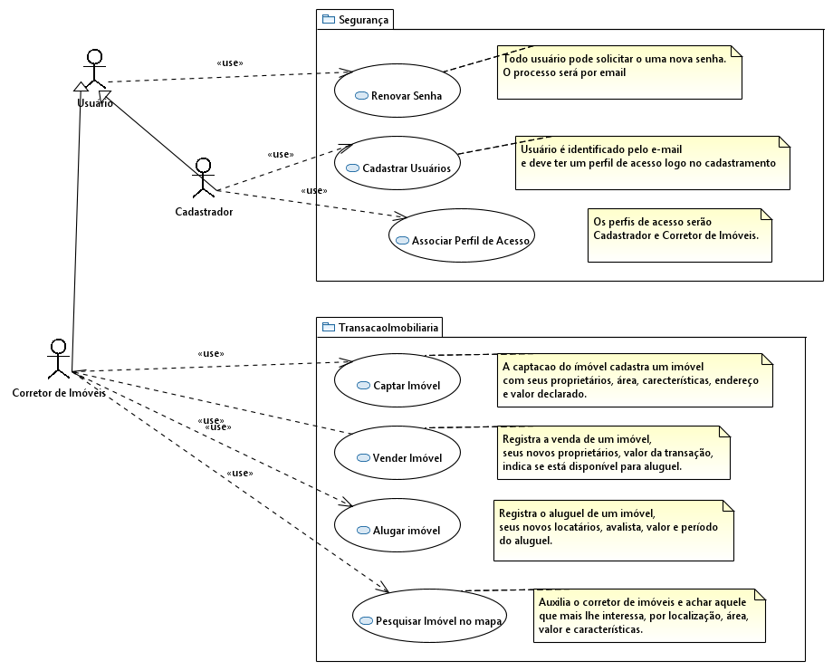
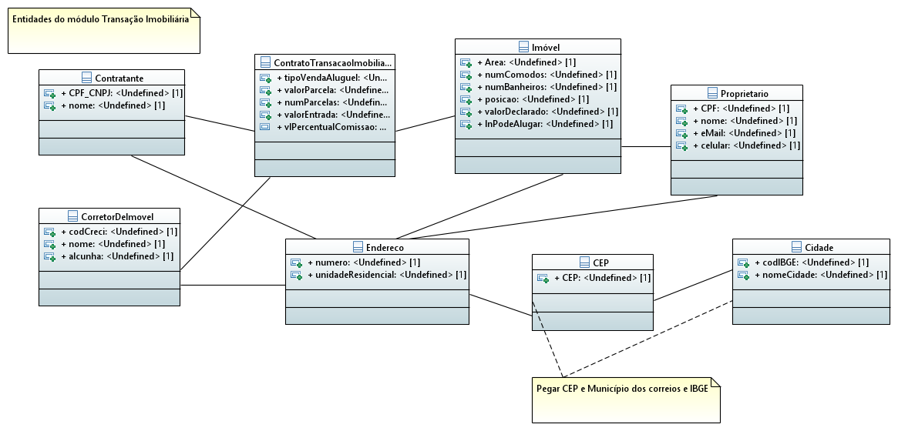

Caracteristicas:
O sistema DOMUS é focado no corretor de transações imobiliárias, o correto de ímóveis. Visando facilitar seu trabalho, facilita o trabalho de a cadeia da transação em si. Desde a captação de imóveis até o registro do contratos de venda ou aluguél, passando pelo cadastramento dos próprios corretores, e também os proprietário e locatários. A busca por imóveis no mapa passa com muito mais clareza onde o futuro morador residirá e também permite que o corretor de TI, agilmente, forneça muitas possibilidades de imóveis.Perfís de usuários do sistema DOMUS e suas funcionalidade permitidas
Entidades do módulo de transações imobiliárias
Entidades do módulo de segurança